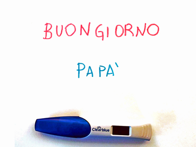

Il podcast
Come nasce un papà è un progetto che viene dal cuore.

La mattina del 28 novembre 2019 mi sveglio e Chiara non è a letto con me. Mi alzo, senza
inforcare gli occhiali, mi dirigo come uno zombie acefalo verso la lucina che si intravede da
sotto la porta, cercando di non tirare testate contro le cose. Vado in cucina e la trovo col
telefono in mano che mi filma! C'è un foglio sul tavolo e un aggeggio lì vicino che non distinguo
perché senza occhiali non vedo neanche le mie mani.
Mi avvicino, assonnato, e leggo la scritta sul foglio:
Buongiorno papà!
Non so come si realizzino i podcast, ma volevo esprimere quello che provavo mentre diventavo un papà: così ho comprato un microfono, ho scritto due righe ed ho iniziato a registrare.
Chi sono
Mi chiamo Francesco Bonizzi e di lavoro faccio lo sviluppatore software freelance. Sono nato nel 1990 a Mantova e adesso vivo in provincia di Parma, con mia moglie Chiara e - come potrete immaginare - mio figlio.
Adoro suonare il pianoforte, la montagna, i boschi, la pioggia üåßÔ∏è e le grandi nevicate. Gioco ai videogiochi, coltivo piantine con la tecnica dell'idroponico, sono vegetariano üíö e appassionato di scienza üî¨.
Il mio piatto preferito sono i tortelli di zucca mantovani, detesto i fusilli, non so resistere al gelato e leggo tanti manga!

Francesco Bonizzi
Non ho Instagram né Facebook perché mi hanno stufato, ma puoi scrivermi quando vuoi su Telegram o per email!
Episodi
In arrivo a brevissimo!
Curiosità
- Piace molto a mio suocero, che mi ha preparato una torta alle carote in segno di stima
- Tutti i fatti raccontati riguardano veramente i 9 mesi consecutivi al concepimento
- Cazzo, divento pap√†! üòÆ
Vuoi dirmi qualcosa?
-
 Scrivimi su Telegram: @fbonizzi
Scrivimi su Telegram: @fbonizzi -
 Scrivimi per email: fbonizzi.90@gmail.com
Scrivimi per email: fbonizzi.90@gmail.com